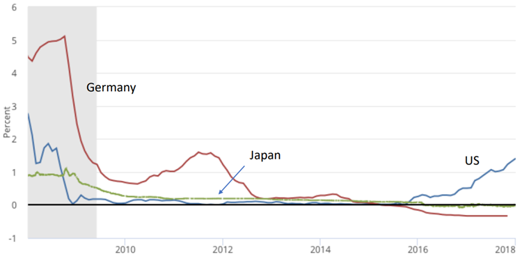
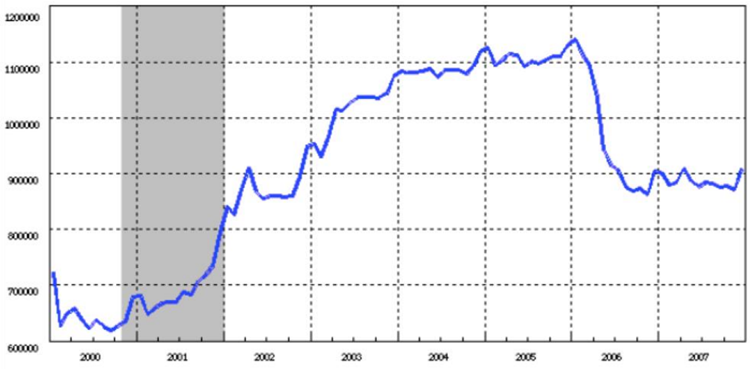
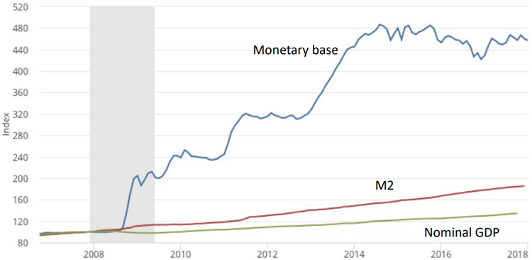
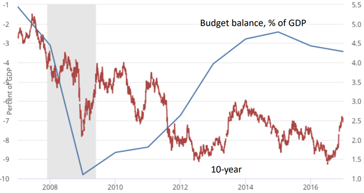

This paper is an exercise in self-indulgence and self-aggrandizement.
本稿は、自己満足と自己顕示の産物である。
The background: In the late 1990s some U.S.-based economists began to grow disturbed about
the economic troubles facing Japan. The source of our unease wasn’t, to be honest, mainly
concern for Japan per se, or even about the impact of Japanese troubles on the global
economy. What bothered us, instead, was the sense that our intellectual framework was falling
down on the job; that Japan’s stagnation and slide into deflation called into question the
monetary policy orthodoxy of the day, which basically asserted that central bankers could
always head off deflation and get unemployment down to the NAIRU.
背景：1990年代後半、一部の米国人エコノミストの間で、日本が直面していた経済的苦境に対する懸念が高まり始めました。正直なところ、我々の不安の主な原因は、日本そのものへの懸念や、日本の問題が世界経済に及ぼす影響への懸念にあったわけではありません。むしろ我々を悩ませていたのは、我々の知的枠組みが機能不全に陥っているという感覚でした。つまり、日本の停滞とデフレへの転落は、当時の金融政策の定説――すなわち、中央銀行は常にデフレを未然に防ぎ、失業率をNAIRU（インフレを加速させない失業率）の水準まで低下させることができるという考え方――に疑問を投げかけるものだったのです。
This unease also had a practical dimension. Japan, for all its cultural distinctiveness, is in
economic terms much like other nations, our own in particular: a big, advanced economy with
its own currency, effective administration, a competent civil service, and economic
policymakers who, if rarely ideal, aren’t usually idiots. If Japan could get stuck in an economic
trap for years on end, the same thing could happen to the rest of us.
こうした不安には、現実的な側面もあった。日本は、その文化的な独自性とは裏腹に、経済面では他の国々、とりわけ我々の国とよく似ている。すなわち、独自の通貨、効率的な行政機構、有能な官僚組織、そして（理想的とは言えないまでも、決して愚かではない）経済政策の立案者たちを擁する、大規模な先進経済国なのである。もし日本が長年にわたって経済的な「罠」から抜け出せなくなるとすれば、我々にも同じことが起こり得るかもしれない。
In early 1998 I set out to reassure myself by writing down a little model to show that if Japan
was having troubles, it was simply because the Bank of Japan wasn’t trying hard enough. But as
sometimes happens when you try to model your intuitions explicitly (and is one of the main
reasons for doing formal analysis), the model ended up telling me something quite different –
namely, that when short-term interest rates are near zero it is not, in fact, easy for the central
bank to reflate the economy. In fact, even very large increases in the monetary base will have essentially no effect unless the private sector is convinced that there has been a permanent
shift in the central bank’s objectives, a new willingness to accept and even promote inflation. As
I put it, the central bank needed to “credibly promise to be irresponsible.”
1998年の初め、私はある簡単なモデルを書き出すことで、自分自身の考えを裏付けようと試みました。その考えとは、日本が苦境に陥っているのは単に日本銀行の努力が足りないからだ、というものでした。しかし、直感的な見解を明示的なモデルに落とし込もうとする際によくあることですが（そして、それこそが形式的な分析を行う主な理由の一つでもあるのですが）、そのモデルが私に示した結論は、当初の予想とは全く異なるものでした。すなわち、短期金利がゼロに近い状況下では、中央銀行が景気を再浮揚させることは実際には容易ではない、という事実です。実際、マネタリーベースを大幅に拡大したとしても、中央銀行の目標に恒久的な変化が生じたこと――つまり、インフレを容認し、さらには積極的に推進しようとする新たな姿勢――を民間部門が確信しない限り、その効果は実質的に皆無に等しいのです。私が表現した言葉を借りれば、中央銀行には「無責任になることを、信憑性をもって約束する」必要があったのです。
I wrote up that analysis in a short online theoretical paper in March 1998, then enlarged it later
that year in a Brookings paper (Krugman 1998) that took on issues of the performance of the
financial sector, the role of fiscal policy, and the relevance of historical experience.
私は1998年3月、オンラインで公開した短い理論的論文にその分析をまとめましたが、同年後半には、金融セクターのパフォーマンス、財政政策の役割、そして歴史的経験の妥当性といった論点を取り上げ、ブルッキングス研究所の論文（Krugman 1998）として内容を拡充しました。
Ten years later my fears came true: as Figure 1 shows, with the coming of the global financial
crisis the whole advanced world basically turned Japanese, experiencing a protracted era of near-zero interest rates. The United States has emerged from that era, barely; Europe and
Japan itself have not.
10年後、私の懸念は現実のものとなりました。図1が示すように、世界金融危機の到来とともに、先進国全体が実質的に「日本化」し、ゼロ金利に近い状態が長期間続く時代を経験することになったのです。米国はその時代から辛うじて脱却しましたが、欧州や日本自身は、いまだそこから抜け出せていません。

What I want to ask in this paper is how good the analytical approach of 1998 looks in the light
of subsequent experience. Were its basic predictions correct? Where did it fall down? What
new issues have arisen? And how does its policy prescription look after all these years?
本論文で問いたいのは、その後の経験に照らして、1998年当時の分析的アプローチがどのようなものだったか、という点である。その基本的な予測は正しかったのか。どこに誤りがあったのか。どのような新たな問題が生じたのか。そして、長年の時を経た今、その政策的処方箋はどのように評価されるのか。
The concept of a liquidity trap goes all the way back to Hicks (1937). Interest in the issue faded
during the long postwar boom and the inflationary, high-interest rate era that followed. Still,
some economists, notably Summers (1991), expressed concern that too low an inflation target
might lead to frequent episodes in which monetary policy was constrained by the zero lower
bound. In fact, the now-conventional 2 percent inflation target was adopted in part because
simulation analyses like Reifschneider and Williams (2000) suggested (wrongly) that 2 percent
was high enough to make ZLB episodes rare and brief.
流動性のわなという概念は、古くはヒックス（1937年）にまで遡ります。戦後の長期好況や、それに続くインフレ・高金利の時代には、この問題への関心は薄れていました。しかし、一部の経済学者、とりわけサマーズ（1991年）は、インフレ目標が低すぎると、金融政策がゼロ金利制約（ZLB）によって制約される事態が頻発しかねないと懸念を表明していました。実際、現在では一般的となっている「インフレ目標2％」が採用された背景には、ライフシュナイダーとウィリアムズ（2000年）によるシミュレーション分析が、2％という水準であればゼロ金利制約に直面する事態は稀であり、かつ短期間で済むだろうと示唆していた（そして、その示唆は誤りであったわけですが）という事情がありました。
So what was new in my 1998 analysis? Three main things, I think.
では、私の1998年の分析における新しい点は何だったのでしょうか。主に3つの点があると思います。
First, I framed the argument in terms of a New Keynesian model rather than some version of ISLM: intertemporal maximization by representative agents and rational expectations, with shortterm price stickiness the only deviation from full equilibrium. I did these things not because I believe them to be an accurate description of reality – I’m very much an IS-LM fanboy – but to
give hostages, to ensure that the results weren’t being driven by the ad-hockery of Hicksian
macro.
まず私は、IS-LMモデルの何らかの変種ではなく、ニュー・ケインジアン・モデルの枠組みで議論を展開しました。すなわち、代表的個人による異時点間の最適化と合理的期待を前提としつつ、完全均衡からの唯一の逸脱として短期的な価格の硬直性を導入したのです。私がそうしたのは、それらが現実を正確に記述していると信じていたからではありません（実のところ、私はIS-LMモデルの熱烈な支持者なのです）。そうではなく、ヒックス流のマクロ経済学につきものの「アドホック（その場しのぎ）な仮定」によって結果が左右されたわけではないことを保証するために、あえて厳しい前提条件を自らに課した（いわば「人質を差し出した」）のです。
Second, I focused on the effects of changes in the monetary base, rather than following what
had by that time become the conventional approach of modeling monetary policy in terms of
an interest rate target (e.g. as set by a Taylor rule.) Again, this was not a matter of realism, since
monetary policy at the time was in fact usually formulated in terms of interest rate targets.
Instead, it was an attempt to deal – in advance, it turned out – with an argument Bernanke
(2000) and others made, which is that expanding the money supply must, more or less as a
matter of definition, raise the equilibrium price level: “money issuance must ultimately raise
the price level, even if nominal interest rates are bounded at zero.”
第二に、私は、当時すでに主流となっていた「金利目標（例えばテイラー・ルールに基づくもの）を用いて金融政策をモデル化する」というアプローチに従うのではなく、マネタリー・ベースの変化が及ぼす影響に焦点を当てました。繰り返しますが、これは現実性の問題ではありませんでした。というのも、当時の金融政策は実際、通常は金利目標に基づいて策定されていたからです。むしろそれは、バーナンキ（2000）らが提示した議論――マネー・サプライの拡大は、多かれ少なかれ定義上、均衡物価水準を上昇させるはずだという議論（すなわち、「名目金利がゼロに張り付いていたとしても、貨幣の発行は最終的に物価水準を上昇させるはずである」という主張）――に、先んじて対処しようとする試みだったのです。
This was the view I myself held before setting out to model the issue. It turned out, however,
not to be true.
この問題のモデル化に着手する前、私自身もそのように考えていました。しかし、それは事実ではないことが判明しました。
Third, in the Brookings paper I spent considerable time on the implications of changes in the
monetary base on financial intermediaries and hence on broader definitions of the money
supply. This reflected contemporary policy discussions: it was common, indeed almost
conventional wisdom, to attribute Japan’s troubles to problems in its banking sector, as
evidenced by the failure of broader aggregates to expand despite supposedly loose monetary
policy. But I ended up concluding that failure of broad aggregates to rise with the monetary base – a collapse of the money multiplier – is exactly what one should expect in a liquidity trap,
even if the banks are in perfectly fine shape.
第三に、ブルッキングス研究所の論文において、私はマネタリーベースの変化が金融仲介機関、ひいてはより広義のマネーサプライの定義に及ぼす影響について、かなりの紙幅を割いて論じました。これは当時の政策論議を反映したものでした。当時、日本が直面していた困難の原因を銀行部門の問題に求める見方は一般的であり、事実、半ば「定説」とさえ見なされていました。その根拠とされたのが、金融政策が緩和的であるとされていたにもかかわらず、広義のマネー指標が拡大しなかったという事実です。しかし、私は最終的に次のような結論に至りました。すなわち、たとえ銀行の経営状態が極めて健全であったとしても、マネタリーベースの拡大に伴って広義のマネー指標が増加しないこと――いわゆる「信用乗数」の崩壊――こそ、流動性の罠においてはまさに予想される事態である、ということです。
I won’t rehash the theoretical model here, just summarize the key strategic simplifications. It
was, as I said, a New Keynesian-style model, but an extremely stripped-down one. There was no
explicit modeling of production, and hence no discussion of the labor market. And while the
model was infinite-horizon, I assumed that nothing would change after the second period, so
that in effect it became a two-period model, with the first period being “now” and the second
“forever after.”
ここでは理論モデルの詳細を繰り返すことはせず、戦略的に単純化した要点だけをまとめます。前述の通り、それはニュー・ケインジアン・スタイルのモデルでしたが、極めて簡略化されたものでした。生産に関する明示的なモデル化は行われておらず、したがって労働市場についての議論もありませんでした。また、無限期間のモデルではありましたが、第2期以降は何も変化しないと仮定したため、実質的には2期間モデル――第1期が「現在」、第2期が「それ以降の永遠」――となりました。
The result of these simplifications was an extremely minimalist model, with an immediate,
striking implication. If, for whatever reason, the natural rate of interest in the first period was
negative – that is, it would require a negative nominal rate to achieve full employment – the
proposition that money issuance must raise the price level was false. Or if you like, it was
missing a word: permanent money issuance would raise the price level. But a monetary
expansion the private sector expected to be temporary, to be wound down after the crisis had
passed, would do nothing at all: the extra monetary base would just sit there.
こうした単純化の結果、極めてミニマリストな（要素を極限まで削ぎ落とした）モデルが導き出され、そこからは即座に、かつ衝撃的な含意が明らかになった。もし何らかの理由で第1期の自然利子率がマイナスであった場合――つまり、完全雇用を達成するには名目金利をマイナスにする必要があった場合――「貨幣の発行は物価水準を上昇させる」という命題は誤りとなる。あるいは、正確に言うなら、そこにはある言葉が欠けていたことになる。すなわち、「恒久的な」貨幣発行であれば物価水準を上昇させる、ということだ。しかし、危機が去った後には縮小されると民間部門が予想するような一時的な金融拡大であれば、何の効果ももたらさない。供給された追加的なマネタリーベースは、ただそこに滞留するだけだからである。
Furthermore, it was reasonable for the private sector to assume that even large increases in the
monetary base in a liquidity-trap economy would be temporary. We saw this in practice when
Japan adopted a policy of quantitative easing in the 2000s. As Figure 2 shows, this policy was
quickly reversed once the economy appeared to be recovering.
さらに、流動性のわなに陥った経済においてマネタリーベースが大幅に拡大したとしても、それは一時的なものに過ぎないと民間部門が想定することは合理的でした。日本が2000年代に量的緩和政策を導入した際、実際にそのような動きが見られました。図2が示すように、景気の回復傾向が見え始めると、この政策は速やかに撤回されたのです。

More recently, the Federal Reserve, while it hasn’t moved as abruptly as the BOJ did, is similarly
moving to shrink its balance sheet now that the economy has emerged, at least for now, from
the liquidity trap. Realistically, then, monetary expansion under conditions of near-zero interest
rates should be viewed as temporary – and more important, will be viewed as temporary,
meaning that the intuitive proposition that huge increases in the monetary base must be
inflationary is wrong.
より最近の動きとして、連邦準備制度（FRB）も、日本銀行ほど急激な動きではないものの、経済が（少なくとも現時点では）流動性の罠から脱したことを受けて、同様にバランスシートの縮小へと動いています。したがって現実的に見れば、ゼロ近傍の金利環境下における金融緩和は一時的なものと見なすべきであり、さらに重要なことに、実際に一時的なものと見なされることになります。つまり、「マネタリーベースの巨額な拡大は必然的にインフレを招く」という直感的な命題は誤りなのです。
Of course, a model is only a model, and this model didn’t even pretend to be realistic. What
matters are predictions and prescriptions: what the model says should happen, and what it
suggests about appropriate policy responses. So how has it worked out?
もちろん、モデルはあくまでモデルにすぎず、このモデルは現実的であることを装ってさえいませんでした。重要なのは予測と処方箋、つまり、このモデルが何が起こるべきだと示しているか、そして適切な政策対応について何を示唆しているかという点です。では、実際にはどうなったのでしょうか。
Although my 1998 paper focused on monetary policy, the framework had clear implications for
fiscal policy as well. In fact, I would summarize its predictions as involving two propositions
about monetary policy and two about fiscal policy. In a liquidity trap:
私の1998年の論文は金融政策に焦点を当てたものでしたが、その枠組みは財政政策に対しても明確な示唆を与えるものでした。実際、その予測を要約すれば、金融政策に関する2つの命題と、財政政策に関する2つの命題から成ると言えるでしょう。流動性の罠においては、
In retrospect, these propositions may seem obvious. But they weren’t, either in 1998 or in the
midst of the post-crisis slump: many prominent figures denied one or all of them (and some still
do).
今振り返れば、こうした命題は自明のことのように思えるかもしれない。しかし、1998年当時や、危機後の低迷期においては、決してそうではなかった。多くの著名人がそれらの一部、あるいはすべてを否定していたからだ（中には今なお否定している者もいる）。
Start with the proposition that monetary expansion would be neither inflationary nor effective.
One of the discussants of that 1998 paper was Ken Rogoff, who declared that
金融緩和はインフレを招かず、効果もないという前提から始めよう。
1998年の論文の討論者の一人であるケン・ロゴフは、次のように述べている。
“No one should seriously believe that the BOJ would face any significant technical problems in
inflating if it puts it mind to the matter, liquidity trap or no. For example, one can feel quite
confident that if the BOJ were to issue a 25 percent increase in the current supply and use it to
buy back 4 percent of government nominal debt, inflationary expectations would rise.”
流動性の罠の有無にかかわらず、日本銀行が本気でインフレを起こそうとすれば、技術的に大きな問題に直面するなどと考えるべきではありません。例えば、もし日銀が通貨供給量を25％拡大し、その資金で名目政府債務の4％を買い入れたとすれば、インフレ期待は確実に高まるだろうと確信を持って言えます。
And in 2009, Allan Meltzer declared that
そして2009年、アラン・メルツァーはこう宣言した。
“[N]o country facing enormous budget deficits, rapid growth in the money supply and the
prospect of a sustained currency devaluation as we are has ever experienced deflation. These
factors are harbingers of inflation.”
我々が直面しているような、巨額の財政赤字、マネーサプライの急拡大、そして通貨価値の持続的な下落という状況にある国で、デフレを経験した例はかつてありません。これらはインフレの前兆なのです。
Finally, in 2010 a who’s who of conservative economists and pundits sent an open letter to Ben
Bernanke warning of dire consequences from the Fed’s policy of quantitative easing:
ついに2010年、保守派の経済学者や論客のそうそうたる顔ぶれがベン・バーナンキ宛てに公開書簡を送り、FRB（連邦準備制度理事会）の量的緩和政策が招きかねない深刻な事態について警告を発しました。
“We believe the Federal Reserve’s large-scale asset purchase plan (so-called “quantitative
easing”) should be reconsidered and discontinued. We do not believe such a plan is necessary
or advisable under current circumstances. The planned asset purchases risk currency
debasement and inflation, and we do not think they will achieve the Fed’s objective of
promoting employment.”
我々は、連邦準備制度理事会（FRB）による大規模資産購入計画（いわゆる「量的緩和」）を再検討し、停止すべきだと考えている。現下の状況において、こうした計画が必要であるとも、賢明であるとも思われない。計画されている資産購入は通貨の価値低下やインフレを招く恐れがあり、また、雇用の促進というFRBの目標を達成できるとも考えられない。
What we actually saw, as shown in Figure 3, was an enormous rise in the monetary base, far
larger than anyone initially contemplated. Yet nominal GDP growth and inflation remained low.
図3に示されるように、実際に観測されたのはマネタリーベースの急激な拡大であり、その規模は当初の予想をはるかに上回るものでした。それにもかかわらず、名目GDPの成長率やインフレ率は低い水準にとどまりました。

The figure also shows strikingly little growth in M2; what growth there was probably reflected,
at least in part, a shift of funds from shadow banking, not counted in the aggregate, to insured
intermediaries.
同図はまた、M2の伸びが著しく小さいことも示しています。そのわずかな伸びも、おそらくは（統計上の）集計対象外であるシャドーバンキングから、預金保険の対象となる金融仲介機関へと資金がシフトしたことを、少なくとも部分的には反映したものと考えられます。
All this was exactly as predicted, although some economists apparently didn’t get the memo.
For example, in 2013 Martin Feldstein described the failure of monetary expansion to produce
inflation as “puzzling,” and insisted that the decoupling was due to the Fed’s decision to pay
interest on excess reserves, which caused monetary base to simply accumulate in the banking
system. As it happens, the Bank of Japan did not pay such interest during the quantitative
easing episode shown in Figure 2, and saw a similar lack of results.
こうした事態はすべて予測通りでしたが、一部の経済学者にはその点が十分に認識されていなかったようです。
例えば、2013年にマーティン・フェルドスタインは、金融拡大を行ってもインフレが生じない状況を「不可解」だと評しました。そして彼は、この乖離の原因は連邦準備制度理事会（FRB）が「超過準備」に対して金利を支払うと決定したことにあり、それによってマネタリーベースが単に銀行システム内に滞留する結果になったのだと主張しました。しかし実際には、図2に示された量的緩和の局面において、日本銀行はそのような金利を支払っていなかったにもかかわらず、同様にインフレが生じないという結果に終わっています。
What about deficits and interest rates? As Figure 4 shows, huge U.S. deficits in 2009-12 were
actually associated with interest rates that were low by historical standards, as liquidity-trap
analyses predicted. This was very much not what many influential figures, including some
economists, expected to happen. The Wall Street Journal seized on an uptick in long-term rates
in early 2009 to publish an editorial titled “The bond vigilantes: The disciplinarians of U.S. policy
makers return.” In 2010 Alan Greenspan, writing in the Financial Times, came out with one of
my favorite economic pronouncements of all time (emphasis mine):
財政赤字と金利についてはどうだろうか。図4が示すように、2009年から2012年にかけての米国の巨額の財政赤字は、実際には歴史的基準から見て低い金利と結びついていた。これは、流動性の罠に関する分析が予測していた通りの結果であった。しかし、一部の経済学者を含む多くの有力者たちが予想していた事態とは、全く異なるものであった。ウォール・ストリート・ジャーナル紙は、2009年初頭に長期金利がわずかに上昇したことを捉え、「債券の自警団（ボンド・ビジランテ）――米国の政策立案者を戒める番人たちの帰還」と題する社説を掲載した。2010年には、アラン・グリーンスパンがフィナンシャル・タイムズ紙に寄稿し、私がこれまでで最も気に入っている経済に関する発言の一つを披露した（強調は筆者による）：

“Despite the surge in federal debt to the public during the past 18 months—to $8.6 trillion from
$5.5 trillion—inflation and long-term interest rates, the typical symptoms of fiscal excess, have
remained remarkably subdued. This is regrettable, because it is fostering a sense of
complacency that can have dire consequences.”
過去18ヶ月間で、民間部門が保有する連邦債務は5兆5000億ドルから8兆6000億ドルへと急増したにもかかわらず、財政の行き過ぎを示す典型的な兆候であるインフレや長期金利は、驚くほど低い水準にとどまっています。これは残念なことです。なぜなら、こうした状況が、深刻な事態を招きかねない「慢心」を助長しているからです。
Some historians of science tell us that the conventional view of how theories get accepted –
that they are tested against evidence, and accepted if they pass – isn’t quite right. What
matters is that a theory make surprising predictions, ones that run counter to conventional
wisdom, and is proved right.
科学史家の中には、理論が受け入れられる仕組みについての従来の考え方――つまり、証拠と照らし合わせて検証され、それに合格すれば受け入れられるという見方――は必ずしも正しくない、と説く人たちがいます。重要なのは、その理論が、従来の通念に反するような驚くべき予測を立て、かつそれが正しいと証明されることなのです。
That seems to me to be a pretty good description of how liquidity-trap economics fared in the
aftermath of the financial crisis. The theory made predictions about inflation, monetary
aggregates, and interest rates that were very much at odds with what many people believed;
those predictions were proved correct.
金融危機後の状況における「流動性のわな」の経済学の展開について、それは極めて的確な描写であるように思われます。この理論は、インフレ、マネーサプライ（通貨供給量）、金利に関して、多くの人々の通念とは大きく異なる予測を立てていましたが、それらの予測は正しいことが証明されました。
So far, however, I haven’t gotten to the fourth prediction, large fiscal multipliers. That’s
because there’s more controversy about what the evidence says. Clearly we didn’t have
runaway inflation or soaring interest rates. But evaluating the effect of fiscal policy takes a bit
more parsing of the data. Skeptics of the liquidity-trap case, I’d argue, have misunderstood how
to frame the issue. But let me take a moment first to point out that here, too, many influential
voices, both among academic economists and among policymakers, vehemently disagreed with
the proposition that fiscal multipliers would be large, or even positive.
しかし、これまでのところ、私は4つ目の予測である「大きな財政乗数」についてはまだ取り上げていません。その理由は、何が証拠として示されているかについて、議論の余地があるからです。確かに、制御不能なインフレや金利の急騰は起きませんでした。しかし、財政政策の効果を評価するには、データをもう少し詳細に分析する必要があります。流動性の罠という状況設定に懐疑的な人々は、この問題をどう捉えるべきかという点について誤解していると私は考えます。ただ、その点について述べる前に、まず指摘しておきたいことがあります。ここでもまた、学界の経済学者や政策立案者といった多くの有力な人々が、財政乗数が大きくなる、あるいはプラスにさえなるという命題に対し、激しく異議を唱えていたのです。
Why? There were actually three distinct anti-Keynesian arguments, in each case made by
people one would not normally have regarded as cranks.
なぜか。実は、反ケインズ的な議論は3つあり、そのいずれもが、通常なら奇人変人とは見なされないような人々によって展開されたものだったからである。
First, one set of economists essentially resurrected Say’s Law: they insisted that since income
must be spent, any increase in public spending must, by definition, crowd out an equal amount
of private spending. (See the discussion in Krugman 2009.)
まず、ある経済学者グループは、セイの法則を事実上復活させた。彼らは、所得は必ず支出されるのだから、公共支出の増加は、定義上、同額の民間支出を圧迫するに違いないと主張した。（クルーグマン2009の議論を参照。）
Second, another set of economists managed to convince themselves, wrongly, that Ricardian
equivalence implies a zero multiplier on government spending. (See Krugman 2011.) Actually,
my original paper laid out a model with full Ricardian equivalence, in which the multiplier on
short-term increases in government spending was 1.
第二に、別の経済学者グループは、リカードの等価命題が政府支出の乗数をゼロにすることを意味すると（誤って）思い込んでしまいました（Krugman 2011を参照）。実際には、私の当初の論文で提示した完全なリカードの等価命題が成立するモデルにおいて、短期的な政府支出の増加に対する乗数は1でした。
Most consequentially for actual policy, many policymakers were persuaded by the arguments
of Alesina and Ardagna (2010) that spending cuts would actually be expansionary, because they
would improve confidence. Here’s Jean-Claude Trichet in 2010:
実際の政策にとって最も重要な点として、多くの政策立案者が、歳出削減は信頼感を高めることでかえって景気拡大をもたらすとするアレジーナとアルダーニャ（2010年）の主張に説得されました。2010年当時のジャン＝クロード・トリシェ氏の発言は以下の通りです。
“As regards the economy, the idea that austerity measures could trigger stagnation is incorrect
… In fact, in these circumstances, everything that helps to increase the confidence of
households, firms and investors in the sustainability of public finances is good for the
consolidation of growth and job creation. I firmly believe that in the current circumstances
confidence-inspiring policies will foster and not hamper economic recovery, because
confidence is the key factor today.”
「経済に関して言えば、緊縮策が停滞を招きかねないという考えは誤りです。……実際、こうした状況下では、財政の持続可能性に対する家計、企業、投資家の信頼を高めるあらゆる措置が、成長の定着と雇用の創出にとってプラスに働きます。私は、現在の状況において信頼感を醸成する政策こそが経済回復を促進し、決してそれを阻害することはないと確信しています。なぜなら、今日において信頼こそが鍵となる要素だからです。」
Now, empirical analysis of fiscal policy is notoriously difficult, because of the endogeneity of
both revenues and, to a lesser extent, spending. The raw correlation between budget deficits
and output is negative, but everyone understands that this is because recessions cause
revenues to shrink and spending on safety-net programs to grow.
財政政策の実証分析は、歳入および（程度は低いものの）歳出の双方に内生性が存在するため、極めて困難であることが知られています。財政赤字と生産（アウトプット）の間には負の相関が見られますが、これは景気後退によって歳入が減少し、セーフティネット関連の支出が増加するためであることは周知の事実です。
Yet simply attempting to purge the cyclical component of the deficit, as Alesina and Ardagna
did, is problematic. For one thing, statistical techniques for doing so don’t seem to work very
well: it was immediately obvious to many readers of the A-A work that their episodes of fiscal
expansion and contraction didn’t seem to correspond to known policy changes; an IMF analysis
that used narrative evidence on actual policy reversed their main result. Even identifying the
policy right, however, doesn’t deal with the problem that stimulus programs are likely to be implemented when the economy is weak (as in the case of the Obama stimulus) and austerity
programs often implemented, or at least delayed until, the economy is strong.
しかし、アレジーナとアルダーニャが行ったように、単に財政赤字から景気循環に伴う変動分を取り除こうとすることには問題があります。第一に、そのための統計的手法が必ずしも有効に機能していないように見受けられます。実際、彼らが特定した財政拡大や財政引き締めの局面は、既知の政策変更と整合していないことが、多くの読者にとって一目瞭然でした。実際、実際の政策に関する記述的証拠（ナラティブ・エビデンス）を用いたIMFの分析では、彼らの主要な結論が覆されています。もっとも、仮に政策を正確に特定できたとしても、それだけでは解決できない問題があります。それは、景気が低迷している時に景気刺激策が実施されやすく（オバマ政権下の景気刺激策のように）、一方で緊縮策は、景気が好調な時に実施される（あるいは少なくとも景気が好調になるまで実施が先送りされる）ことが多い、という点です。
There are a variety of ways one might try to circumvent these problems, but as it happens the
crisis itself provided something approximating a natural experiment: the debt panic that
followed the 2009 Greek crisis. Following that crisis, some countries either chose or were
forced into severe fiscal austerity despite high unemployment and the inability to pursue
offsetting monetary expansion. Others were under less pressure.
こうした問題を回避しようとする試みには様々な方法があり得ますが、実際には、危機そのものが「自然実験」に近い状況をもたらしました。それは、2009年のギリシャ危機に続いた債務パニックです。この危機を受けて、一部の国は、高い失業率や（景気下支えのための）金融緩和策を講じることができない状況にありながらも、厳しい財政緊縮策を選択、あるいは余儀なくされました。一方で、それほど強い圧力を受けなかった国々もありました。
This wasn’t a perfect natural experiment, because arguably some of the countries forced into
the harshest austerity were troubled in other ways. Still, as Blanchard and Leigh (2013) pointed
out, one can at least partially deal with this issue by comparing economic performance with
forecasts generated before austerity went into effect.
これは完全な自然実験とは言えなかった。なぜなら、最も厳しい緊縮財政を余儀なくされた国々の中には、他の面でも問題を抱えていた国があったと考えられるからである。それでも、Blanchard and Leigh (2013) が指摘したように、緊縮策の実施前に作成された予測と実際の経済実績を比較することで、この問題にある程度対処することは可能である。
It’s important to note, by the way, that this natural experiment took place over a limited period
– 2009 to 2012 or 2013. Why? Because that’s how long the debt panic lasted. Once Mario
Draghi issued his famous pronouncement that the ECB would do “whatever it takes,” bond
spreads rapidly dropped and the pressure on governments to engage in extreme austerity
policies faded. As a result, all the usual measurement and endogeneity issues apply to data
from subsequent years.
ちなみに、この自然実験が行われたのは2009年から2012年（あるいは2013年）にかけての限られた期間であったという点に留意する必要があります。なぜなら、債務危機によるパニックが続いていたのがその期間だったからです。マリオ・ドラギ氏がECB（欧州中央銀行）として「あらゆる手段を講じる（whatever it takes）」とあの有名な宣言を行うと、国債スプレッドは急速に縮小し、各国政府に対する極端な緊縮財政政策の実施を求める圧力も薄れました。その結果、それ以降の期間のデータについては、測定や内生性に関する一般的な問題がすべて当てはまることになります。
Figure 5 therefore shows a Blanchard-Leigh type comparison for the period from 2009-2013. On
the horizontal axis is the degree of austerity, as measured by the IMF’s estimate of the change
in the cyclically adjusted budget balance as a percentage of potential GDP. On the vertical axis
is the deviation of growth from the IMF’s forecast in the April 2010 World Economic Outlook.
そこで図5は、2009年から2013年の期間について、ブランシャール＝リー（Blanchard-Leigh）型の比較を示している。横軸は緊縮財政の度合いであり、これは潜在GDP比での景気調整後財政収支の変化に関するIMFの推計値によって測定されている。縦軸は、IMFが2010年4月の『世界経済見通し（World Economic Outlook）』で示した予測値と実際の成長率との乖離である。
As in Blanchard-Leigh, this comparison suggests multipliers substantially larger than those
estimated from pre-liquidity-trap data, and indeed probably more than one. So the fourth
prediction of the original liquidity-trap analysis is, I would argue, also supported by the
evidence.
ブランシャール＝リー（Blanchard-Leigh）の研究と同様に、今回の比較は、流動性の罠に陥る前のデータから推定されたものよりも大幅に大きな乗数（おそらくは1を上回る値）を示唆しています。したがって、当初の流動性の罠に関する分析が導き出した第4の予測もまた、実証データによって裏付けられていると言えるでしょう。
Overall, this is a pretty good record! An analysis made a decade before the global financial
crisis, based on theory with a bit of historical evidence from the 1930s, ended up providing a
good guide to monetary and fiscal policy post-2008 – a much better guide than the views held
by many influential policymakers.
全体として、これは極めて優れた実績と言えます。世界金融危機が起きる10年前に、理論と1930年代の歴史的証拠を多少踏まえて行われた分析が、結果として2008年以降の金融・財政政策の適切な指針となったのです。それは、多くの有力な政策立案者が抱いていた見解よりも、はるかに優れた指針でした。
In 1998 I argued that while a monetary expansion perceived as temporary would be ineffective
in a liquidity trap, an expansion perceived as permanent would work – because it would raise
the expected rate of inflation, and hence reduce real interest rates. So I declared that the Bank
of Japan needed to “credibly promise to be irresponsible,” making clear its willingness to
tolerate higher inflation.
1998年、私は次のように論じました。流動性の罠に陥っている状況下では、一時的だと認識される金融緩和策は効果を持たないものの、恒久的だと認識される緩和策であれば効果を発揮する――なぜなら、それは予想インフレ率を上昇させ、ひいては実質金利を低下させるからです。そこで私は、日本銀行は「無責任になることを信憑性をもって約束」する必要がある、すなわち、より高いインフレを容認する姿勢を明確にすべきだと主張したのです。
A more diplomatic way to put this prescription, and the way many economists now do put it, is
to say that when nominal rates are near zero, gaining monetary traction requires convincing
markets that there has been a monetary regime change. So what have we learned about the
usefulness of this prescription since 2008?
この処方箋をより外交的な表現で、かつ多くの経済学者が現在用いている言い方で表すならば、名目金利がゼロに近い状況下で金融政策の実効性を確保するには、「金融政策の枠組み（レジーム）が転換した」と市場に確信させる必要がある、ということになります。では、2008年以降、この処方箋の有用性について私たちは何を学んだのでしょうか。
The first thing we’ve learned, disappointingly, is how hard it is to get central bankers to
consider a regime change.
残念ながら最初に学んだのは、中央銀行の政策担当者に「レジーム・チェンジ（体制の転換）」を検討させるのがいかに難しいか、ということです。
Since the 1990s there has been a wide consensus that responsible monetary policy, with a due
concern for price stability, means having an inflation target of 2 percent. Why 2, as opposed to
1 or 3? Well, that’s a funny story. Partly it’s New Zealand’s fault: as the first central bank to
explicitly adopt an inflation target, their choice has had an effect utterly disproportionate to
their economic weight or population (even if you include the sheep.)
1990年代以降、物価の安定に十分配慮した責任ある金融政策とは、2％のインフレ目標を掲げることであるという見解が広く定着しています。なぜ1％や3％ではなく、2％なのでしょうか？ 実は、これには興味深い経緯があります。その一因はニュージーランドにあります。同国はインフレ目標を明示的に採用した最初の国でしたが、その選択は、経済規模や人口（羊の数を含めたとしても）からすれば到底考えられないほど大きな影響を及ぼしたのです。
But 2 percent also seemed to be a good compromise among different factions in the economic
policy community. Those who believed that “price stability” should mean zero inflation were
willing to accept 2 percent on the grounds that given unmeasured gains from technological
progress, 2 might really be zero. Meanwhile, as mentioned before, those who worried about
hitting the zero lower bound believed that 2 was high enough to largely eliminate that concern.
And 2 percent inflation also seemed high enough to eliminate most problems associated with
downward nominal wage rigidity.
しかし、2パーセントという数字は、経済政策に関わる様々な派閥の間で、妥当な妥協点とも見なされていました。「物価の安定」とはインフレ率ゼロを意味すべきだと考えていた人々は、技術進歩に伴う（統計には反映されない）便益を考慮すれば、実質的には2パーセントがゼロに相当し得るとの理由から、2パーセントという水準を受け入れる用意がありました。一方、前述の通り、ゼロ金利制約（名目金利のゼロ下限）への直面を懸念していた人々にとっても、2パーセントという水準は、そうした懸念を概ね解消するのに十分な高さだと考えられていました。さらに、2パーセントのインフレ率は、名目賃金の下方硬直性に起因する問題の大部分を解消するのにも十分な水準であるように思われました。
We now know, however, that the assumptions underlying the 2 percent solution were all
wrong. Despite a 2 percent inflation target, the U.S. spent 7 years at the zero lower bound, and
the euro area is still there. Downward nominal wage rigidity turned out to be a significant issue
in the United States, and a huge issue in southern Europe, where it greatly increased the
difficulty of achieving internal devaluation in Spain and especially Portugal.
しかし現在では、「2％目標」という解決策の前提となっていた仮定がすべて誤りであったことが判明しています。2％のインフレ目標を掲げていたにもかかわらず、米国は7年間にわたりゼロ金利制約（ゼロ金利下限）の状態にあり、ユーロ圏も依然としてその状態にあります。名目賃金の下方硬直性は米国において重要な問題となりましたが、南欧ではさらに深刻な問題となり、特にスペインやポルトガルにおける「内部切り下げ」の実現を著しく困難にしました。
Given the way experience has undermined much of the original case for a 2 percent inflation
target, and given the severity of the economic crisis, you might therefore have expected some
revision – a rise in the inflation target, or a shift to some other kind of targeting – price level or
nominal GDP targeting. But that hasn’t happened. Even though a 2 percent inflation target is an
essentially arbitrary number, it has become a focal point, a sort of token of respectability that
almost no central bankers are willing to meddle with. (In this sense it resembles the role once
played by the gold standard.)
経験が2％のインフレ目標の当初の根拠の多くを覆し、経済危機の深刻さを鑑みると、インフレ目標の引き上げ、あるいは物価水準目標や名目GDP目標といった別の目標設定への移行など、何らかの修正が期待されたかもしれない。しかし、そうした動きは起こらなかった。2％のインフレ目標は本質的に恣意的な数値であるにもかかわらず、中心的な焦点となり、ほとんどどの中央銀行家も手を加えようとしない一種の権威の象徴となっている。（この点において、かつて金本位制が果たした役割に似ている。）
This is quite remarkable. If the worst economic crisis since the 1930s, one that cumulatively
cost advanced nations something on the order of 20 percent of GDP in foregone output, wasn’t
enough to provoke a monetary regime change, it’s hard to imagine what will.
これは実に注目に値する事態です。1930年代以来最悪の経済危機――先進国全体で失われた生産額が累積的にGDPの約20％に達したほどの危機――をもってしても金融制度の転換が引き起こされなかったとすれば、一体何があればそれが起こるのか、想像することさえ困難です。
This in turn might seem to suggest that while monetary policy could in principle offer a solution
to the problem of the zero lower bound, fiscal policy ends up being the only realistic tool.
Unfortunately, fiscal responses were pretty bad too: a brief, modest turn toward stimulus at
the beginning of the crisis was followed by austerity in the midst of high unemployment and
impotent monetary policy.
こうした状況は、ゼロ金利制約という問題に対して、原理的には金融政策が解決策となり得るものの、現実的な手段としては結局のところ財政政策しかないことを示唆しているように見えるかもしれません。残念なことに、財政面での対応もまた極めて不十分なものでした。危機の初期には景気刺激策へと一時的かつ小規模に舵が切られたものの、その後は、高い失業率が続き金融政策も効果を発揮できない状況下で、緊縮財政へと転換されてしまったのです。
Aside from the economic and human costs of this failure to act, the unwillingness and/or
inability of central bankers to even attempt regime change means that we don’t have much
evidence on whether the monetary policy prescriptions from liquidity-trap analysis could work
in practice. There is, however, one exception: the place where it all began, Japan.
こうした対応の不備に伴う経済的・人的なコストはさておき、中央銀行が「レジーム・チェンジ（政策枠組みの転換）」を試みようともしなかった（あるいは試みられなかった）という事実は、流動性の罠の分析から導き出された金融政策の処方箋が、実際のところ有効に機能し得るのかどうかを判断する材料が乏しいことを意味しています。しかし、例外が一つだけあります。それは、すべてが始まった場所、すなわち日本です。
When he became Prime Minister in 2012, Shinzo Abe – heretofore known as a conservative on
many issues – surprised the world by endorsing a fairly radical monetary experiment.
“Abenomics” was supposed to contain three “arrows” – fiscal stimulus and structural reform as
well as monetary expansion. In practice, however, fiscal policy has if anything tightened slightly,
while structural reform, as often happens, is in the eye of the beholder. There has, however,
been a very visible shift not just in the Bank of Japan’s actions but in its underlying attitude:
while it still professes the conventional 2 percent target, it gives every indication of being
willing to be far more adventurous than in the past in its efforts to achieve that target.
2012年に首相に就任した際、それまで多くの問題において保守派として知られていた安倍晋三氏は、極めて急進的な金融政策の実験を支持し、世界を驚かせました。「アベノミクス」は、金融緩和に加え、財政出動と構造改革という「3本の矢」を柱とするものとされていました。しかし実際には、財政政策はむしろわずかに引き締め気味に推移し、構造改革については（よくあることですが）その評価が人によって分かれる状況にあります。とはいえ、日本銀行の行動だけでなく、その根底にある姿勢には極めて明確な変化が見られます。日銀は依然として従来の「2％」という目標を掲げてはいますが、その達成に向けて、過去よりもはるかに大胆な手段を講じる意欲があることを如実に示しているのです。
So how is Kurodanomics – a much better description in practice than Abenomics – working?
Figure 6 shows two indicators, nominal GDP and the real effective exchange rate. Despite being at (or slightly below) the zero lower bound, the Bank of Japan evidently managed to achieve
considerable traction. It has not so far managed to achieve the inflation target, but at least the
Japanese experiment suggests some support for the view that monetary regime change can be
effective even at the zero lower bound. Credibly promising to be irresponsible makes a
difference; the problem is that central bankers won’t do it.
では、「アベノミクス」よりも実態を的確に表す「クロダノミクス」は、どのような成果を上げているのだろうか。
図6は、名目GDPと実質実効為替レートという2つの指標を示している。日本銀行は、金利がゼロ金利制約にある（あるいはそれをわずかに下回る）状況下にもかかわらず、明らかにかなりの効果を上げることに成功した。インフレ目標の達成には至っていないものの、少なくとも日本のこの試みは、ゼロ金利制約下であっても金融政策の枠組みの転換（レジーム・チェンジ）が有効であり得るという見解を裏付けるものと言える。「無責任な政策をとる」と信憑性を持って約束することには意味がある。問題は、中央銀行の政策担当者がそれを実行しようとしないことにある。
Before pronouncing Kurodanomics a vindication of the 1998 view, however, I would raise a
question that worries me both about Japan and about the role of monetary policy in general:
what happens to the analysis if we really do face a future of secular stagnation?
しかし、「クロダノミクス」が1998年当時の見解の正しさを証明するものだと結論付ける前に、日本について、そして金融政策の役割全般について私が懸念しているある疑問を提起しておきたいと思います。それは、もし私たちが実際に「長期停滞（セキュラー・スタグネーション）」の未来に直面するとしたら、その分析はどうなるのか、という点です。
Since there still seems to be a lot of confusion – willful confusion? – about what secular
stagnation means, let’s be clear: it has nothing to do with the economy’s growth rate, certainly
not in the short run and maybe not even in the long run. Instead, it’s the proposition that for
whatever reason the natural rate of interest, the interest rate consistent with full employment,
will on average be negative for a long time. This in turn means that liquidity-trap conditions will
become the norm, not the exception – rather than an economy that goes through brief
episodes at the zero lower bound in the aftermath of exceptional busts, we will have an
economy in which the ZLB is binding most of the time, except during exceptional
booms/bubbles.
「長期停滞（セキュラー・スタグネーション）」の意味については、依然として多くの混乱（あるいは意図的な混乱？）が見られるようですが、ここで明確にしておきましょう。この概念は経済の成長率とは何ら関係がありません。少なくとも短期的には無関係ですし、長期的にもそうかもしれません。むしろ、これは次のような命題です。すなわち、何らかの理由により、完全雇用と整合的な金利である「自然利子率」が、長期間にわたって平均的にマイナスになる、というものです。これはつまり、流動性の罠の状態が例外的な事態ではなく「常態」になることを意味します。極端な不況の余波で一時的にゼロ金利制約（ZLB）に直面するような経済ではなく、極端な好況やバブルの時期を除けば、大半の期間においてZLBが制約として機能するような経済になる、ということです。
This was not the way I modeled the liquidity trap in 1998, or how Eggertsson and Woodford
modeled it in 2003. In these papers the assumption was that after a period of depressed demand, the economy would return to a regime with a positive natural rate of interest. Once
the economy returned to “normal”, conventional monetary policy would regain traction. So
what the central bank needed to do was commit to a higher price level in this future period
when it would have regained its normal superpowers.
これは、私が1998年に、あるいはエガートソンとウッドフォードが2003年に流動性の罠をモデル化した際の手法とは異なるものでした。それらの論文では、需要が低迷する期間を経た後、経済は自然利子率がプラスとなる状態（レジーム）に回帰すると想定されていました。経済が「正常」な状態に戻れば、従来の金融政策が再び有効性を発揮するようになるからです。したがって中央銀行に求められたのは、正常な状態に戻り、本来の強力な政策手段を行使できるようになった将来の時点において、より高い物価水準を目指すとコミットすることでした。
But if a negative natural interest rate is the new normal, how can the central bank gain
traction? The answer seems to be that it must create a self-fulfilling prophecy of higher
inflation: it must convince the market that it will achieve inflation; this higher expected inflation
reduces real interest rates; and lower real interest rates create an economic boom that
generates the expected inflation.
しかし、自然利子率がマイナスであることが「ニューノーマル（新たな常態）」となるならば、中央銀行はいかにして政策効果を発揮できるのだろうか。その答えは、インフレ率の上昇という「自己実現的予言」を創り出すことにあるようだ。つまり、中央銀行はインフレ目標を達成するという姿勢を市場に確信させなければならない。そうしてインフレ期待が高まれば実質金利は低下し、その低下した実質金利が景気拡大をもたらすことで、実際にインフレが引き起こされるというわけである。
This is obviously even harder than convincing the market that there has been a monetary
regime change. And it also raises the prospect of what I’ve called the timidity trap: if the
inflation target is set too low, it won’t generate the required economic boom even if markets
believe the central bank will hit it. I find this especially worrisome for Japan, where
demographic factors – a rapidly shrinking working-age population – suggest that the
conventional 2 percent target might well be too low to achieve economic escape velocity.
これは明らかに、金融政策の枠組みが転換したと市場に納得させることよりもさらに困難な課題です。また、私が「臆病さの罠（timidity trap）」と呼んできた事態を招く恐れもあります。つまり、インフレ目標が低すぎると、たとえ市場が中央銀行による目標達成を信じたとしても、経済を活性化させるために必要なブーム（好況）は生まれないということです。私はこの点を、特に日本にとって懸念すべきことだと考えています。日本では、急速な生産年齢人口の減少といった人口動態上の要因を考慮すると、経済が「脱出速度（escape velocity）」に達して成長軌道に乗るためには、従来の2％という目標では低すぎる可能性があるからです。
But let me not end on a down note. I began this paper by framing it as an assessment of how
modern liquidity-trap analysis, brought into being two decades ago in an attempt to make
sense of Japan’s problems, has fared in the aftermath of a global crisis that produced Japan-like
conditions in many countries. And the answer, I’d argue, is that it has done very well.
しかし、暗い話で締めくくるのはやめておきましょう。本稿の冒頭で私は、日本の抱える問題を理解しようとする試みから20年前に生まれた現代の「流動性のわな」に関する分析が、日本と同様の状況を多くの国にもたらした世界的な危機の後において、どのような評価に値するのかを検証すると述べました。そしてその答えは、極めて良好なものであったと私は考えます。
Put it this way: If economists were like natural scientists, we’d be celebrating the success of our
standard model. Confronted with conditions very different from those encountered in the past,
the model made predictions very much at odds with the expectations of many policymakers
and market participants. And those predictions proved correct.
こう言えば分かりやすいでしょう。もし経済学者が自然科学者であったなら、私たちは自分たちの「標準モデル」の成功を祝っていたはずです。過去に直面した状況とは大きく異なる事態に直面した際、そのモデルは、多くの政策立案者や市場参加者の予想とは大きく食い違う予測を導き出しました。そして、その予測は正しかったことが証明されたのです。
Now, it’s true that policymakers by and large ignored this successful analysis, with ugly results
for the real world. It’s also true that essentially nobody who was wrong has admitted error, or
changed his views. But aside from that, this is basically a happy story.
確かに、政策立案者たちは概してこの的確な分析を無視し、その結果、現実世界には悲惨な事態が招かれました。また、誤った判断を下した当事者の中で、自らの非を認めたり、見解を改めたりした者が事実上皆無であることも事実です。しかし、そうした点を別にすれば、これは基本的にハッピーエンドの物語なのです。